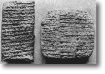
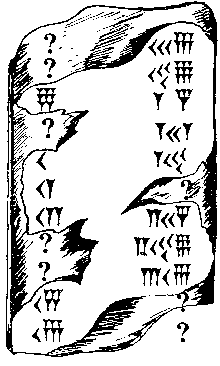

Acertijo original (en ruso) de A. N. Zhurinsky. Adaptación al inglés de Thomas E. Payne.

El sistema de escritura más antiguo que se conoce se originó hace más de 5,000 años en lo que hoy son Irán, Irak y otras partes de Asia Occidental. Este sistema de escritura, llamado «cuneiforme», fue usado por los antiguos reyes persas para dar a conocer sus decretos y para revisar los impuestos de sus muchos súbditos. Los caracteres se grababan sobre tablillas de arcilla o de piedra con instrumentos en forma de cuña. Aunque se conservan muchísimas inscripciones, los estudiosos modernos no lograron descifrar este sistema de escritura hasta 1846.
En este acertijo harás el mismo tipo de trabajo que tuvieron que hacer aquellos estudiosos para descifrar la escritura cuneiforme. Lo que sigue es un fragmento de un documento educativo babilonio descubierto en 1811. Fue este documento el que permitió a los estudiosos descifrar el sistema numérico que usaban los antiguos babilonios. A partir de ahí pudieron extender lo aprendido al sistema de escritura completo. Muchos de los caracteres son ilegibles por los estragos del tiempo. Aun así, es posible deducir cuáles deberían ser los caracteres que faltan. Tu tarea es completarlos.

A la derecha puedes ver el dibujo de la tablilla. Para que puedas escribir tus respuestas con el teclado, abajo reproducimos la tablilla usando dos símbolos: Y para la cuña vertical y < para la cuña angular (el «gancho»). En la tablilla real las cuñas de un mismo grupo se amontonan en filas compactas; aquí las escribimos una tras otra, sin espacios. Cuando un renglón tiene grupos separados (fíjate bien en la tablilla), los separamos con un espacio. Escribe tus respuestas de la misma manera: las cuñas de un grupo van juntas y los grupos distintos se separan con un espacio. Donde la tablilla es ilegible verás una casilla.